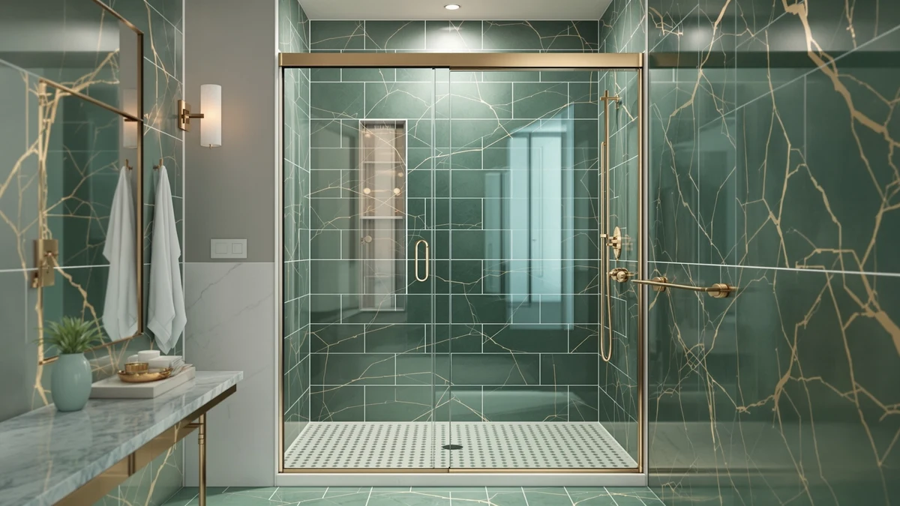

Sliding Shower Doors vs Hinged: Which Is Better? (2026)
Prices and picks verified as of November 2026. Independent, reader-supported reviews.


Things to Know Before You Buy
- Sliding shower doors need zero floor clearance to open, so they fit small bathrooms where a hinged door would hit the vanity or toilet.
- Hinged doors clean faster because there is no bottom track to collect soap scum and hard water deposits.
- Frameless sliding doors cost more than basic hinged models, mostly due to the roller and track hardware.
- Hinged doors need a clear swing radius, typically 24 to 30 inches, measured from the hinge point.
- Roller wear is the most common long-term complaint for sliding doors in verified owner reviews.
The sliding shower doors vs hinged decision usually comes down to one question: how much floor space do you have around your shower? We researched specs, current Amazon pricing and patterns across thousands of verified owner reviews to see where each door type holds up and where it falls short.
Neither style wins outright. A sliding door earns its keep in a cramped bathroom where a swinging panel would clip the sink, while a hinged door rewards buyers who want the easiest surface to wipe down and the fewest moving parts to maintain. Below, we break the two down by build quality, price and the daily experience of actually using one.
Quick Answer
For tight bathrooms, a sliding shower door is the better call because it needs no swing clearance, and the Aurisal Frameless Stainless Steel Sliding Shower is a solid starting point at $389.99. For bathrooms with room to spare, a hinged door is easier to clean and generally has fewer parts that wear out over time. Choose based on your floor plan first and your cleaning tolerance second.
What is Sliding Shower Doors?
A sliding shower door, sometimes called a bypass door, uses two or more glass panels that run on a track mounted along the top and bottom of the shower opening. Instead of swinging outward on a hinge, one panel glides behind or in front of the other, so the door never needs clearance beyond the width of the enclosure itself. That makes sliding doors a natural fit for alcove showers and tubs where the opening sits flush against a vanity, toilet, or narrow hallway.
Most sliding doors on the market today are frameless or semi-frameless, built from tempered glass between 1/4 and 3/8 inch thick, with rollers that ride along an aluminum or stainless steel track. The track itself sits at the bottom of the opening and often includes a small lip or channel to direct water back into the shower basin. Spec sheets for current sliding models list standard widths from 56 to 60 inches, which covers most US alcove tub and shower openings without custom ordering.
Because the hardware does more work than a simple hinge, sliding doors generally run from the mid-$200s to the mid-$500s depending on glass thickness, frame finish, and brand. The tradeoff for the space savings is a track that needs regular attention, which we cover in the build quality section below.
What is Hinged?
A hinged shower door works like a standard interior door. A single glass panel pivots open on one or two wall-mounted hinges, swinging outward into the bathroom rather than sliding along a track. Most hinged doors used for showers and walk-in enclosures are frameless, held in place by a pair of heavy-duty pivot hinges bolted directly into the glass and the wall or a fixed side panel.
Because there is no track to engineer, hinged doors have a simpler bill of materials than sliding doors: one glass panel, two hinges, and sometimes a handle and a magnetic door seal. That simplicity shows up in the price, with many hinged doors sitting at or below the cost of a comparable sliding model. It also shows up in maintenance, since there is no bottom channel for water, hair, or soap residue to collect in.
The catch is clearance. A hinged door needs an open swing radius, typically 24 to 30 inches depending on the panel width, free of toilets, vanities, or towel bars. In a spacious bathroom that is rarely an issue. In a tight one, it can make a hinged door impractical no matter how much you prefer the cleaning experience.
Head-to-Head: Build Quality & Durability
Build quality is where sliding shower doors vs hinged splits most clearly along mechanical lines. A hinged door has one moving part worth worrying about: the hinge. Manufacturers rate pivot hinges for tens of thousands of open-close cycles, and because the glass carries no weight beyond its own, the hardware rarely becomes the weak point. Spec sheets across the models we researched consistently list stainless steel or brass hinge components rated for years of daily use.
Sliding doors ask more of their hardware. Every open and close cycle runs the panel across a set of rollers seated in a track, and that track sits exactly where water, soap, and hair collect. Verified owner reviews for sliding models mention roller stiffness or squeaking as the most common issue after a year or two, and a handful of buyers note needing to clean or replace rollers to keep the door gliding smoothly. Glass thickness itself holds up about the same between the two styles, since most current frameless models on either side use 1/4 to 3/8 inch tempered glass.
Neither type is fragile when installed correctly, but hinged doors have fewer failure points to track over a decade of ownership, while sliding doors trade that simplicity for the space savings described above.
Head-to-Head: Price & Value
Current Amazon pricing puts sliding shower doors across a wider range than hinged doors. Among the sliding models we compared, prices run from the ENSO SENKA at $269.99 up to the KPUY frameless door at $499.96, with the extra cost tied to roller quality, track finish, and glass thickness. Hinged doors tend to cluster closer together in price because the hardware list is shorter and more standardized across brands.
Value depends on what you are solving for. If floor space is the constraint, a mid-range sliding door like the GETPRO double sliding model at $273.76 delivers the clearance benefit without the premium pricing of the heavier frameless options. If low maintenance is the priority, a hinged door's simpler construction often means a lower total cost over several years, since there is no track hardware to eventually replace.
Head-to-Head: Use Experience
Day to day, the sliding shower doors vs hinged gap shows up most in two moments: getting in and cleaning up. A sliding door lets you step straight in without swinging anything open, which matters if you share a bathroom with someone who needs extra room to maneuver or if you keep a trash can or hamper near the shower. The bottom track, though, becomes a squeegee blind spot. Owners consistently report wiping the glass but skipping the channel, which lets mineral deposits build up faster than on a flat hinged panel.
A hinged door opens and closes faster, with no need to align a panel on a track, and the full surface is reachable with a standard squeegee or microfiber cloth. The swing itself can be awkward in a small space, especially if you store towels or a scale near the shower entrance. Reviewers of hinged models rarely mention the door mechanism itself and instead focus on the seal, since a magnetic strip or sweep at the bottom determines how well the door keeps water inside the enclosure.
Neither door type is quieter or louder in any meaningful way, but the sliding track does pick up a faint rattle over time according to a number of verified reviews, something hinged doors do not experience since there is no track to loosen.
When to Choose Sliding Shower Doors
Pick a sliding shower door if your bathroom layout does not give a hinged panel room to swing. Narrow bathrooms, showers positioned close to a vanity or toilet, and guest bathrooms where every inch of floor space matters all favor the sliding design. The same logic applies if you are fitting a door into an existing alcove tub where the opening width is fixed and you cannot add clearance without remodeling.
A sliding door also makes sense if two people regularly use the same bathroom at different times, since it never blocks a walkway or swings into a towel bar. Plan to clean the track every few weeks to keep the rollers gliding smoothly. Spec sheets for current models rate the rollers for years of use, but that durability depends on keeping the channel free of soap and hair buildup, which the owner-review patterns we researched flag as the main source of long-term complaints.
When to Choose Hinged
Pick a hinged door if your bathroom has the swing clearance to spare and you want the lowest-maintenance option on the market. Larger primary bathrooms, walk-in showers without a tub lip, and any layout where the door can open freely into open floor space all suit a hinged design well. The lack of a track means less to clean and fewer parts that can eventually fail.
A hinged door is also the better choice if resale or long-term simplicity matters to you. Spec sheets consistently rate pivot hinges for a long service life, and because there is no roller system to maintain, a hinged door tends to need less upkeep over a decade than a sliding model. The one scenario to avoid is a bathroom where the swing path crosses a walkway, since that turns a simple design into a daily obstacle.
Our Top Picks
If you have decided a sliding door fits your bathroom better, here are three current options worth a look, based on specs, pricing and verified owner feedback.

Editor’s Pick
Frameless Stainless Steel Sliding Shower
A frameless stainless steel slider with a straightforward track, a solid middle ground between entry-level and premium pricing.
$389.99
Check Price on Amazon
Premium Choice
KPUY Frameless Shower Door 55-60"
The heaviest-duty track and roller setup in this lineup, built for buyers who want the sturdiest sliding mechanism available.
$499.96
Check Price on Amazon
Best Value
ENSO SENKA 56-60" W x
The lowest price in this group without dropping down to a thinner glass panel, a reasonable entry point for a first sliding door.
$269.99
Check Price on AmazonFrequently Asked Questions
Are sliding shower doors cheaper than hinged doors?
Not always. Basic sliding doors and basic hinged doors land in a similar price range, but frameless sliding systems with heavy-duty rollers often cost more than a comparable hinged door because of the track hardware. Budget hinged doors with a simple pivot hinge tend to be the cheapest option overall.
Which is easier to clean, a sliding shower door or a hinged door?
Hinged doors are easier to clean. A single glass panel with no track gives you full access to every surface with a squeegee. Sliding doors have a bottom track and overlapping panels that trap soap scum and hard water deposits, and owners consistently report needing a dedicated track brush to keep that channel clear.
Do sliding shower doors work for small bathrooms?
Yes, that is their main advantage. A sliding door needs no floor clearance to open, which makes it the better pick for a small bathroom where a swinging hinged door would hit a vanity, toilet, or towel bar.
Can you convert a sliding shower door to a hinged door?
Technically yes, but it usually means a full teardown rather than a simple swap. The wall and curb anchor points differ between a sliding track system and a hinged pivot, so most owners replace the entire enclosure instead of retrofitting one into the other.
Which lasts longer, sliding or hinged shower doors?
Hinged doors generally have fewer moving parts to wear out since the hinge itself carries the full load with no rollers involved. Sliding doors rely on wheels and a track, and verified reviews show rollers are the most common failure point after a few years of daily use, though many manufacturers sell replacement roller kits.
Final Verdict
The sliding shower doors vs hinged question comes down to your floor plan more than any single spec. Choose a sliding door, such as the Aurisal Frameless Stainless Steel Sliding Shower, when clearance is tight and you can commit to cleaning the track every few weeks. Choose a hinged door when your bathroom has room to spare and you want the simpler, lower-maintenance mechanism. Measure your space first, then let that measurement make the call.